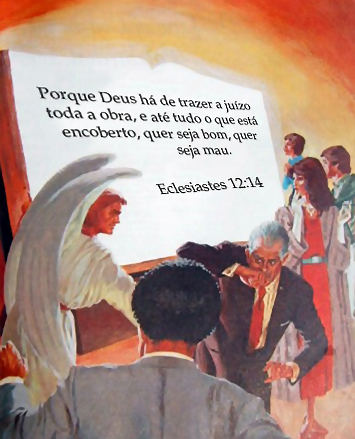
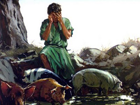

O texto esculpido por João em Apocalipse 14:7 , no bojo do Plano de Redenção, representa o antítipo do dia das trombetas da Festa dos Tabernáculos. O anúncio de trombetas tem por escopo chamar atenção do povo para obra expiatória de Cristo no dia da Expiação e preparar a igreja para enfrentar o juízo ou grande dia de Deus, isto ocorre dez dias após as trombetas, a expiação, representa segundo o aludido Plano de Redenção, o juízo investigativo, ou purificação do santuário, eliminação dos pecados acumulados durante o ano.
No antigo Israel os pecados do povo eram transferidos, em figura, do santo para o santíssimo, obra realizada no santuário terrestre mediante o sangue da oferta pelo pecado, destarte, nossos pecados são, de fato, transferidos para o santuário celestial, mediante o sangue de Cristo. E como a purificação típica do santuário terrestre se efetuava mediante a remoção dos pecados pelos quais se poluíra, consequentemente, a real purificação do santuário celeste deve efetuar-se pela remoção, ou apagamento, dos pecados que ali estão registrados.
Isto posto, infere-se que sobre a igreja pesa uma grande responsabilidade de levantar sua voz e anunciar como trombeta: Isaías 58:1. Advertindo ao mundo a sua condenação iminente caso não se arrependa de seus pecados e preparar-se para encontrar com o Senhor, o juízo investigativo já começou. O Senhor ordenou a sua igreja notificar os homens convidando-os a se arrependerem: Atos 17:30-31. Entendimento endossado por White, verbis:
Sobre nós repousa a pesada responsabilidade de advertir o mundo de sua condenação iminente. Deus convida Sua igreja a despertar, e revestir-se de poder. Há imortais coroas a ser ganhas; há o reino do Céu a ser alcançado; há o mundo, perecendo na ignorância, a se iluminado.
Ellen G. White, Testemunhos para a Igreja 7, pág 16
Estamos sendo pesados na balança de Deus, nossa conduta cristã está sendo aferida, portanto, devemos ter cuidado com nossa vida religiosa, nos ditos das Escrituras, cuida de ti e da doutrina, com todo zelo e vigor, evitando cumprir-se as palavras do profeta: Daniel 5:27. Haja vista, que os nossos atos estão sendo registrados em livros. Daniel 7:9-10. Segundo escritos de White, no livro da vida está esculpido somente os nomes dos que serviram ao Senhor em todas as gerações:

Ao abrirem-se os livros de registro no juízo, é passada em revista perante Deus a vida de todos os que creram em Jesus. Começando pelos que primeiro viveram na Terra, nosso Advogado apresenta os casos de cada geração sucessiva, finalizando com os vivos. Todo nome é mencionado, cada caso minuciosamente investigado. Aceitam-se nomes, e rejeitam-se nomes. Quando alguém tem pecados que permaneçam nos livros de registro, para os quais não houve arrependimento nem perdão, seu nome será omitido do livro da vida, e o relato de suas boas ações apagado do livro memorial de Deus. O Senhor declarou a Moisés: "Aquele que pecar contra Mim, a este riscarei Eu do Meu livro." Êxo. 32:33. E diz o profeta Ezequiel: "Desviando-se o justo da sua justiça, e cometendo a iniquidade, ... de todas as suas justiças que tiver feito não se fará memória." Ezeq. 18:24.
Ellen G. White, 1978, O Conflito dos Séculos, pág 482-483
O JULGAMENTO DIVINO ENVOLVE O EXAME DE TRÊS LIVROS, QUAIS SEJAM:
O LIVRO DA VIDA
No livro da vida, parâmetro do julgamento divino, está registrado o nome de todo aquele que aceitou trilhar o ensanguentado caminho da verdade, acompanhado de suas boas obras que dormitam a seu lado. Por inspiração divina João escreveu: Apocalipse 20:12. De acordo com relatos de White:
Parecia haver chegado o grande dia da execução do juízo de Deus. Vários livros achavam-se diante dEle, e na capa de cada um estava escrito em letras de ouro, que pareciam como chama ardente: "Contas-correntes do Céu." Foi então aberto um desses livros, contendo os nomes dos que professam crer na verdade.
Ellen G. White, 1984, Testemunhos Seletos 1, pág 518
Os livros de registro no céu, nos quais estão relatados os nomes e ações dos homens, devem determinar a decisão do juízo, os santos serão julgados pelas obras escritas no livro. O livro da vida contém os nomes de todos os que já entraram para o serviço de Deus. Portanto, vale a pena nosso esforço para cumprir as palavras de Jesus: Lucas 10:20. Da mesma forma, Paulo chama atenção de seu irmão com um pedido em relação aos santos que estão com os nomes no livro da vida: Filipenses 4:3. O profeta do cativeiro Babilônico, olhando através dos séculos viu um tempo de angústia, qual nunca houve, e relatou quem será socorrido e salvo pelo Senhor: Daniel 12:1. Restou comprovado que a igreja de Deus, passará por dura prova. No entanto, o profeta do Apocalipse relata que somente os que estiverem com os nomes escritos no livro da vida entrarão na cidade santa, como recompensa por seus labores na defesa da fé. Apocalipse 21:27. Com certeza, os vencedores foram revestidos com a natureza divina, ou vestes brancas, reconciliados por Cristo e confirmados diante do Pai para sempre. Apocalipse 3:5.
O LIVRO DE MEMÓRIAS
O livro de memórias tem o condão de desempatar, caso ocorra equilíbrio entre as boas e as más obras do pecador no momento do julgamento. Assim, quando Cristo julgar um caso no Juízo de Investigação, e as boas obras empatarem com as más obras, então, ele recorrerá ao livro de memórias, a decisão para vida ou para a morte dependerá da fidelidade, zelo nas reuniões e nos testemunhos não negligenciados. Se as boas obras sobrepor as más obras no livro de memórias, então a decisão será para vida e ele se salvará, caso contrário, se penderem para as más obras, com certeza, e sentença será de morte. Portanto, devemos sempre ter algo a dizer nas reuniões do Senhor, um ato singelo como esse pode representar nossa salvação, ou perdição se formos remissos. Vejamos o que diz White a esse respeito:
Todos devem ter algo para dizer ao Senhor, pois em assim fazendo serão abençoados. Um livro de memórias é escrito com respeito àqueles que não desertam das reuniões, mas falam muitas vezes um ao outro.
Ellen G. White, 1988 Primeiros Escritos, pág 114
Assim como o livro da vida contém os nomes de todos os que já entraram para o serviço de Deus, também são registradas as boas obras dos santos. O livro memorial também inclui as boas obras dos filhos de Deus, bem como um registro de más ações. Tudo que fazemos, pensamos, falamos é registrado pelo anjo relator, segundo White os homens serão julgados pelas obras escritas nos livros.
No Céu um livro é escrito em relação aos que se interessam nas necessidades de seus semelhantes, um livro cujo registro será revelado naquele dia em que o homem será julgado segundo as obras nele escritas.
Ellen G. White, 1987, Beneficência Social, pág 312
Segundo o profeta de Deus, há um memorial escrito: Malaquias 3:16. Registros da lavra de White, mencionam os escritos de Malaquias assegurando que as obras dos justos são imortalizadas no céu, escritas no livro de memórias, tanto as más ações como as tentações vencidas, os sacrifícios e sofrimento suportados por amor a Cristo e sua doutrina. Ver:
"Há um memorial escrito diante de Deus, no qual estão registradas as boas ações dos que temem ao Senhor, e para os que se lembram do Seu nome" Malaquias 3:16. Suas palavras de fé, seus atos de amor, acham-se registrados no Céu. Neemias a isto se refere quando diz: "Deus meu, lembra-Te de mim; e não risques as beneficências que eu fiz à casa de meu Deus" Neemias 13:14. No livro memorial de Deus toda ação de justiça se acha imortalizada. Ali, toda tentação resistida, todo mal vencido, toda palavra de terna compaixão que se proferir, acham-se fielmente historiados. E todo ato de sacrifício, todo sofrimento e tristeza, suportado por amor de Cristo, encontra-se registrado. Diz o salmista: "Tu contaste as minhas vagueações; põe as minhas lágrimas no Teu odre; não estão elas no Teu livro?" Salmos 56:8.
Ellen G. White, 1978, O Conflito dos Séculos, pág 485
São especialmente confortantes as declarações de Ellen White de que o bem é registrado tão fielmente quanto o mal. Ela declara:
Toda tentação resistida, todo mal vencido, toda palavra de terna compaixão que se proferir, acham-se fielmente historiados. E todo ato de sacrifício, todo sofrimento e tristeza, suportado por amor de Cristo, encontra-se registrado.
Ellen G. White, 1978, O Conflito dos Séculos, pág 481
Mesmo os pecados mais secretos virão à tona no dia do juízo. Pecados não confessados não serão apagados, ficam registrados no livro para o dia do julgamento. I Coríntios 4:5. O dever de todo homem que ama deveras à Deus é guardar seus mandamentos. Eclesiastes 12:13-14. Quanto a pecados não confessados, o sábio Salomão disse: Provérbios 28:13 Na mesma linha dos ensinamentos de Salomão, White nos revela:
Pecados de que não houve arrependimento e que não foram abandonados, não serão perdoados nem apagados dos livros de registro, mas ali permanecerão para testificar contra o pecador no dia de Deus. Ele pode ter cometido más ações à luz do dia ou nas trevas da noite; elas, porém, estavam patentes e manifestas Àquele com quem temos de nos haver. Anjos de Deus testemunharam cada pecado, registrando-os nos relatórios infalíveis. O pecado pode ser escondido, negado, encoberto, ao pai, mãe, esposa, filhos e companheiros; ninguém, a não ser os seus autores culpados, poderá alimentar a mínima suspeita da falta; ela, porém, jaz descoberta perante os seres celestiais. As trevas da noite mais escura, os segredos de todas as artes enganadoras, não são suficientes para velar do conhecimento do Eterno um pensamento que seja. Deus tem um relatório exato de toda conta injusta e de todo negócio desonesto.
Ellen G. White, 1978, O Conflito dos Séculos, pág 486
Há também um relatório dos pecados dos homens. Segundo registros de White:
"Porque Deus há de trazer a juízo toda a obra, e até tudo o que está encoberto, quer seja bom quer seja mau." "De toda a palavra ociosa que os homens disserem hão de dar conta no dia do juízo." Disse o Salvador: "Por tuas palavras serás justificado, e por tuas palavras serás condenado." Eclesiastes 12:14; Mateus 12:36, 37. Os propósitos e intuitos secretos aparecem no infalível registro; pois Deus "trará à luz as coisas ocultas das trevas, e manifestará os desígnios dos corações." 1 Coríntios 4:5. "Eis que está escrito diante de Mim: ... as vossas iniquidades, e juntamente as iniquidades de vossos pais, diz o Senhor." Isaías 65:6, 7.
Ellen G. White, 1978, O Conflito dos Séculos, pág 481
Não podemos ocultar pecados para Deus e para os anjos relatores; Deus sabe exatamente o que pensamos e o que fazemos. Portanto, de acordo com as sinceras recomendações do apóstolo João: I João 1:9. Ellen White afirmou:
Toda má palavra, todo ato egoísta, todo dever não cumprido, e todo pecado secreto, juntamente com toda artificiosa hipocrisia” estão escritos nos livros do céu com "terrível exatidão".
Ellen G. White, 1978, O Conflito dos Séculos, pág 481
A única forma de vitória para o crente, consiste em amar a Deus, revestidos com sua natureza seremos compelidos a obedecer a seus mandamentos e amar o nosso irmão. Tudo o que fazemos e falamos é registrado para Cristo julgar com a mais lídima justiça. White nos relata:
A obra de cada homem passa em revista perante Deus, e é registrada pela sua fidelidade ou infidelidade. Ao lado de cada nome, nos livros do Céu, estão escritos, com terrível exatidão, toda má palavra, todo ato egoísta, todo dever não cumprido, e todo pecado secreto, juntamente com toda artificiosa hipocrisia. Advertências ou admoestações enviadas pelo Céu, e que foram negligenciadas, momentos desperdiçados, oportunidades não aproveitadas, influência exercida para o bem ou para o mal, juntamente com seus resultados de vasto alcance, tudo é historiado pelo anjo relator.
Ellen G. White, 1978, O Conflito dos Séculos, pág 481-482
Ellen White instou com a juventude em particular para que não se esquecessem de que suas vidas estavam sendo observadas bem de perto, e que um dia os registros de nossa vida devem ser enfrentados. Para sua audiência de Youth’s Instructor ela escreveu:
Nunca estamos sós. Temos um Companheiro, quer O escolhamos quer não. Lembrai-vos, rapazes e moças, de que aonde quer que vos acheis, o que quer que estejais fazendo, Deus ali está. Para cada uma de vossas palavras ou atos, tendes uma testemunha — o Deus santo, que aborrece o pecado. Coisa alguma do que se diga ou faça ou pense escapa ao Seu olhar infinito. Vossas palavras podem não ser ouvidas por ouvidos humanos, mas são ouvidas pelo Dominador do Universo. Ele vê a ira íntima do coração quando a vontade é contrariada. Ouve a expressão profana. Na mais profunda treva ou solidão, ali está Ele. Dia a dia é feito nos livros do Céu o registro de vossas palavras, vossas ações e vossa influência. Com isso tereis que defrontar-vos.
The Youth’s Instructor, 26 de Maio de 1898
Por fim, vale enaltecer que homens podem esquecer, podem negar seu errôneo modo de agir, mas um registro disto é mantido no livro memorial, e no grande dia do juízo, a menos que os homens se arrependam e andem humildemente diante de Deus, eles enfrentarão este terrível registro justamente como ele se encontra. Segundo assevera White, Deus também vê as tentações vencidas, a devoção, o compromisso com a causa, as batalhas travadas contra o próprio eu:
Deus vê muitas tentações resistidas das quais o mundo e até os amigos íntimos nunca sabem — tentações no lar e no coração. Vê a humildade da alma em vista de sua própria fraqueza; o arrependimento sincero, até de um pensamento que é mau. Vê a inteira devoção a Seu serviço. Anotou as horas de duros combates com o próprio eu — combates que trouxeram vitória. Tudo isto os anjos e Deus sabem.
Ellen G. White, Carta 18, 1891
O LIVRO DA MORTE
Ellen White escreveu em seu renomado livro Primeiros Escritos, página 52, que as obras más dos ímpios são registradas no livro da morte, enquanto no livro de registros todo nome é inscrito, e os atos de todos, seus pecados, e sua obediência, são fielmente escritos. A renomada autora, relata ainda, que viu um livro no qual estava registrado os pecados não confessados de todos os que professaram andar na verdade, porém, negaram com suas obras:
Abriu-se outro livro, no qual se achavam registrados os pecados dos que professam a verdade. Sob o cabeçalho geral de egoísmo, vinha uma legião de pecados. Havia também cabeçalhos sobre cada coluna e, embaixo destes, ao lado de cada nome, achavam-se registrados, em suas respectivas colunas, os pecados menores.
Ellen G. White, 1984, Testemunhos Seletos 1, pág 518
Os nomes escritos neste livro, são daqueles que após beberem águas limpíssimas, enlamearam o resto com seus pés, nos ditos do profeta: Ezequiel 34:17. Na linguagem do profeta de Deus, pastos excelentes, representam a verdade, águas limpíssimas, simbolizam a pureza da doutrina. Neste livro estão registrados todos que trilharam no caminho da verdade, no entanto, foram pesados na balança e achados em falta, turvaram a água com suas apostasias e rebeldia contra a doutrina e os mandamentos do Senhor. Segundo o apóstolo Pedro: II Pedro 2:21-22.
Ademais, o Senhor disse: Êxodo 32:33. Leia-se, cada um responderá por seus próprios pecados perante o Senhor no dia do juízo. Deuteronômio 24:16. Quem não confessar e abandonar seus pecados será riscado do livro da vida, transferido será, o seu nome para o livro da morte. Quando o ancião de dias se assentar no trono, os livros da vida e da morte serão então abertos, na fase do milênio ou juízo de revisão, segundo deslinde de White:
Depois de serem os santos mudados para imortalidade e tomados com Jesus, depois de haverem recebido suas harpas, vestes e coroas, e de entrarem na cidade, Jesus e os santos assentam-se em juízo. Os livros são abertos — o livro da vida e o livro da morte. O livro da vida contém as boas obras dos santos, e o livro da morte as obras más dos ímpios. Esses livros são comparados com o Livro-norma, a Bíblia, e de acordo com isto são os homens julgados.
Ellen G. White, 1988, Primeiros Escritos, pág 52
Outrossim, como visto alhures, Deus tem um relatório exato de toda conta injusta e de todo negócio desonesto praticado por aqueles que não confessaram seus pecados. Ellen White destaca de forma contundente que:
Pecados de que não houve arrependimento e que não foram abandonados, não serão perdoados nem apagados dos livros de registro, mas ali permanecerão para testificar contra o pecador no dia de Deus.
Ellen G. White, 1985, O Conflito dos Séculos, pág 486
Com efeito, para conservarmos os nossos nomes no livro da vida, evitando o fatídico evento de nosso nome ser transferido para o livro da morte. Devemos reconhecer a inutilidade de nossa justiça, que a natureza pecaminosa não passa de trapo de imundície e seguir os conselhos do profeta: Jeremias 3:13. Porque se alimentarmos nossa presunção; I João 1:8. E com certeza não seremos beneficiados pelo sacrifício expiatório de Cristo. Porem, I João 1:9. Por fim, aqueles cujos registros da vida são examinados no juízo investigativo e não confessaram nem se arrependeram de seus pecados, terão seus nomes riscados do livro da vida, o passo que, os que confessaram e se arrependeram, terão seus pecados apagados e serão revestidos da justiça eterna de Cristo, de acordo com deslinde de White:
Quando alguém tem pecados que permaneçam nos livros de registro, para os quais não houve arrependimento nem perdão, seu nome será omitido do livro da vida. Por outro lado, Todos os que verdadeiramente se tenham arrependido do pecado e que pela fé hajam reclamado o sangue de Cristo, como seu sacrifício expiatório, tiveram o perdão acrescentado ao seu nome, nos livros do Céu; tornando-se eles participantes da justiça de Cristo, e verificando-se estar o seu caráter em harmonia com a lei de Deus, seus pecados serão riscados e eles próprios havidos por dignos da vida eterna.
Ellen G. White, 1985, O Conflito dos Séculos, pág 483
O que acontecerá com aqueles, cujos nomes não estão no livro da vida? O profeta de Patmos responde: Apocalipse 20:15.